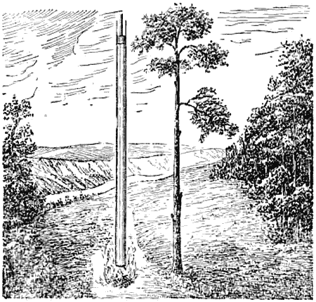
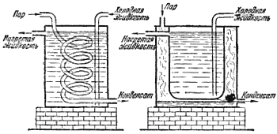

Невидимый переносчик тепла

Следующая особенность воды, мимо которой мы не можем пройти ввиду её исключительной важности, касается перехода жидкой воды в пар. Продолжим дальше опыт, начатый со снегом (стр. 27). После того как весь снег превратился в воду, поставим нашу чашку на горячую плиту и будем наблюдать за термометром. Вода станет нагреваться, и ртуть термометра поползёт вверх. С ровной спокойной поверхности воды выделяется пар. Он невидим, но его легко обнаружить, если поднести к поверхности воды сравнительно холодный предмет, например зеркало: пар охладится и сгустится в мельчайшие капельки, которые затуманят поверхность зеркала. То же самое бывает и с горячим паром, вырывающимся из отверстия в крышке чайника при кипении воды. Струя пара вблизи самого отверстия горяча и невидима, но на некотором расстоянии от отверстия пар уже успевает охладиться воздухом, и мы хорошо видим струю тумана.
Надо заметить, что вода испаряется при всякой температуре. Оставьте в комнате на тарелке немного воды, — за день она может испариться вся. Испаряется не только вода, но и снег, и лёд, и даже при температуре ниже нуля градусов. Ведь сохнет же на морозе бельё. Правда, оно сохнет медленнее, чем летом, когда в сухую погоду оно высыхает за несколько часов, а то и быстрее. Чем выше температура, тем быстрее испаряется вода.
Когда термометр покажет 100 градусов, вода закипит. Это значит, что ниже поверхности воды, вначале преимущественно на стенках сосуда, а затем и по всей массе воды, станут образовываться мелкие пузырьки пара, которые быстро вырастают в объёме и, как более лёгкие, всплывают наверх. Когда пузырьки пара начинают сильно перемешивать воду, мы говорим: вода кипит ключом.
Пока вся вода не выкипит, ртуть в термометре не сдвинется с места.
При переходе одного грамма воды в пар при температуре 100 градусов требуется 538 калорий. Эта энергия, сообщаемая воде в виде тепла, носит название теплоты парообразования.
На что же расходуются эти 538 калорий? Прежде всего представим себе такой опыт. В трубку длиною около двадцати метров, запаянную с одного конца (рис. 7), налита до уровня в 1 сантиметр вода при температуре 100 градусов. Вообразим, что на поверхности воды лежит невесомый поршень, который двигается в трубе без трения и совершенно не пропускает пара. Станем нагревать воду до тех пор, пока она вся не испарится; при этом она поглотит 538 калорий тепла. Когда испарение будет закончено, поршень поднимется больше чем на 16, 5 метра вверх! Значит, при переходе жидкой воды в пар объём увеличился в 1650 раз (точнее — в 1653 раза). Но, чтобы тело могло расшириться, оно должно отвоевать себе для этого место, должно преодолеть давление воздуха! На это затрачивается определённая работа, так называемая работа расширения. При испарении одного грамма воды эта работа, выраженная в тепловых единицах, составит около 43 калорий.

Рис. 7. При испарении объём воды увеличивается приблизительно в 1650 раз.
Но ведь мы знаем, что теплота парообразования для воды равна 538 калориям? Куда же идут остальные 495 калорий? Они необходимы для разъединения связанных между собой в жидкой воде молекул на отдельные свободно движущиеся молекулы пара. Это лишний раз указывает на то, что в жидкой воде молекулы образуют какие-то прочные постройки, — для разрушения их должна быть затрачена значительная энергия.
Расход тепла на образование пара из воды легко ощутим. Намочите руку и помашете ею в воздухе — вы почувствуете прохладу. После купанья в реке стоять мокрому на берегу, да ещё при ветре, неприятно; мы стараемся быстрее вытереться полотенцем, чтобы влага не испарялась с нашего тела и не отнимала от него тысячи калорий.
Смоченная спиртом или эфиром рука ощущает особенно резкий холод. Хотя и спирт и эфир имеют сравнительно небольшую теплоту испарения, но температуры кипения этих жидкостей низки: у спирта 78, 3 градуса, а у эфира 35, 6 градуса. Поэтому и испаряются спирт и эфир во много раз быстрее, чем вода.
Сравним теперь теплоты парообразования различных веществ. Чтобы перевести в пар один грамм ртути, нужно затратить 68 калорий, удельная теплота парообразования спирта равна приблизительно 200 калориям, эфира 90, бензола 94, скипидара 70 и т. д. Мы видим, что и здесь вода стоит обособленно среди других жидкостей.
При переходе пара в воду теплота парообразования полностью выделяется и может быть использована. Кто работает или бывал на заводах и фабриках, тот знает, как широко применяется пар для нагрева. На некоторых заводах паровые трубы образуют столь сложную сеть, что в ней может разобраться только хорошо знающий данное производство человек. Сотни различных конструкций парообогревателей выполняют важную роль в общем технологическом процессе. На рисунке 8 показаны две самые простые установки для нагрева жидкостей: одна — змеевиком, другая — паровой «рубашкой». Пар, омывая холодные стенки, отдаёт им свою теплоту парообразования, и сам превращается в воду — конденсат.

Рис. 8. Змеевик и паровая рубашка.
Испарение воды имеет громадное значение в природе. Со всей поверхности земного шара ежегодно испаряется около 400 тысяч кубических километров воды. Для испарения этой воды расходуется огромное количество солнечного тепла. Чтобы получить столько тепла, надо сжечь десять миллиардов тонн каменного угля.
Представьте себе теперь, какое количество энергии переносит пар в атмосферу. Пусть где-нибудь в районе экватора испарилась вода. Образовавшиеся пары вместе с воздухом поплыли над поверхностью Земли и достигли, например, средних широт, где уже не так тепло. В этих условиях пар станет конденсироваться, то есть превращаться в воду, и выделять теплоту испарения, запасённую на юге, нагревая ею прежде всего воздух, а через него почву и все окружающие предметы. Учесть количество тепла, которое переносят пары воды с одного места земного шара в другое, не представляется возможным; во всяком случае для перевозки соответствующего количества топлива потребовалось бы, вероятно, такое количество транспортных средств, которым человечество ныне ещё не располагает.
Пары воды и облака, всегда имеющиеся в нашей атмосфере, играют ещё и другую роль. Поглощая в сильной степени тепловые лучи, они укрывают нашу Землю как бы одеялом, предупреждая рассеяние тепла и защищая Землю от излишнего перегрева Солнцем.